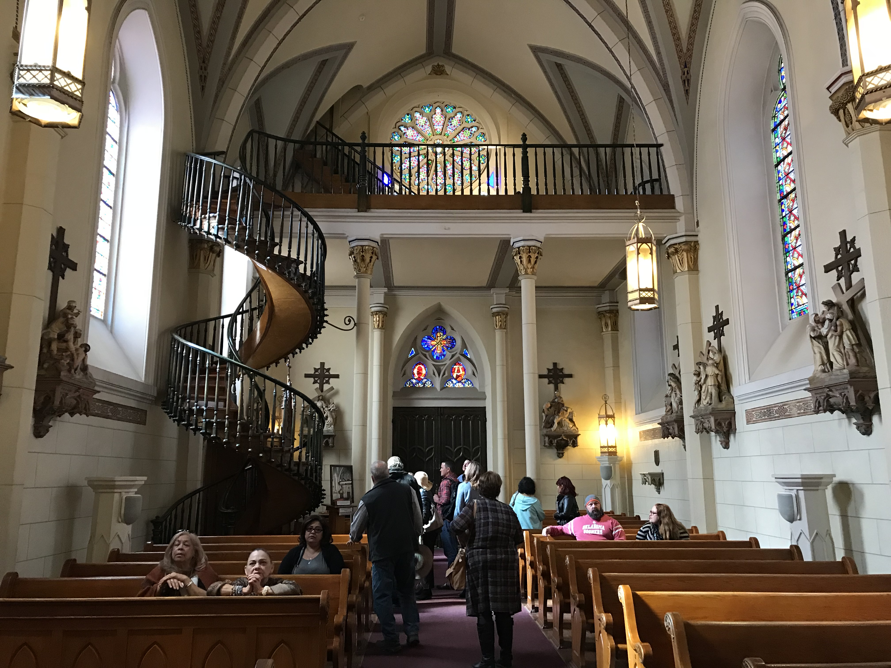

Day 0


My trip started early at 4 o’clock in the morning. My first stop was at a gas station in Amarillo, Texas. I was looking forward to this stop because I was hungry and hadn’t had anything in my stomach. As soon as I stepped out of the car, I got a good whiff of this interesting smell that I couldn’t put a finger on. It was a mix of fertilizer and rotten eggs, then I remember a friend had warned me about the smell of cow manure in Amarillo. I quickly filled up my gas tank, grabbed a quick to-go lunch at McDonald’s and went on my way with all the windows closed.
My next stop was Albuquerque, New Mexico. After 30 minutes of exploring, I decided that it was time to fill up gas and head towards Santa Fe before it got dark. I stopped by the nearest gas station and saw what appeared to be a drug exchange between 2 cars in broad daylight. From faraway, it looked as if one of the men pulled out something from the back of his trunk. That object looked like a pack of weed compacted in a small box, a size of a brick, and exchanged money with another man. My first instinct was, “I need to get out of here before someone starts shooting." 😰 Unfortunately, as soon as I turned on the car engine, one of the “sellers” approached my car. He waved at me, put up a peace sign with one of his hands, and said something to me. I couldn’t hear what he was saying and I was very curious so I cracked the window open.
“HI! HEY! I’m not a gangster [raised both arms up]. I just have a question for you.”, he said.
“Yea?”, I responded.
“Do you like perfume?”
“No”
“NOOO?? I’m selling a perfume by me if you wanna try it out. I have a free sample.”
“Nah, I’m good. Thanks.”
I quickly drove away. I thought in my head, “could this trip get any better…”, and kept looking back at the rear mirror to make sure no one was following me.
Two hours later, I finally arrived in Santa Fe. I stayed at the most gorgeous hotel that I’ve ever been to in my life. It had such an interesting architecture. It was the first trip that I got to do whatever I wanted so I decided to book a hotel room with 2 beds, one to eat on and one to sleep on. I decided to stay in that night and explore Santa Fe the next day.
Day 1


The next morning, I started my journey in downtown Santa Fe. I visited several historic landmarks. Some of my favorite places were San Miguel (the oldest church in the United States), the Loretto staircase, and the “Oldest” house. The next day, I visited the Los Alamos National Lab where I got to see the replica of Fat Man and Little Boy. Los Alamos is where the first atomic bomb was detonated in 1945 which is located 33 miles North of Santa Fe. My final visit was another national historic landmark, El Santuario de Chimayo. It’s well known for the unusual legend about its “magical healing soil”. Many people come to the church to take this soil, hoping to find a cure for their illness. 👉 Read more about the El Santuario de Chimayo here!
Day 2
On the last day, I packed up my luggage and headed home. I decided to spend a night in Amarillo instead of driving another 8 hours home. I did not smell cow manure this time though – maybe I was nose blind. Overall, it was a good and enlightening solo experience.